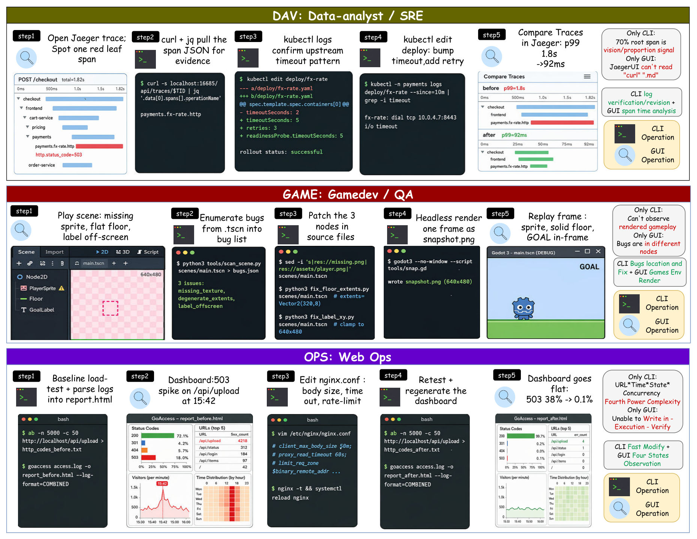

一、研究背景和选题意义
通用数字智能体（Universal Digital Agent）的目标是在真实计算机环境中自主完成长程数字工作，
通过CLI 能力（命令行、代码）与GUI 能力（图形界面）的协同感知与操作实现任务闭环。

混合轨迹示例：数据分析、游戏开发、网站运维中命令行与图形界面交替使用 [WeaveBench]
CLI 能力
命令行操作（Bash）
以 Shell 命令读写文件、管理进程与服务，直接获取系统状态
代表工作：Terminal-Bench · OpenClaw
CLI 能力
代码构建（Coding）
编写、构建、运行与测试程序，以执行结果作为反馈信号
代表工作：SWE-bench · Claude Code · Codex
GUI 能力
图形界面操作（GUI）
基于屏幕截图感知界面状态，以鼠标键盘操作任意软件
代表工作：OSWorld · UI-TARS
三种场景能力互补而非互替：真实任务要求智能体在同一轨迹中依需求选择并切换能力